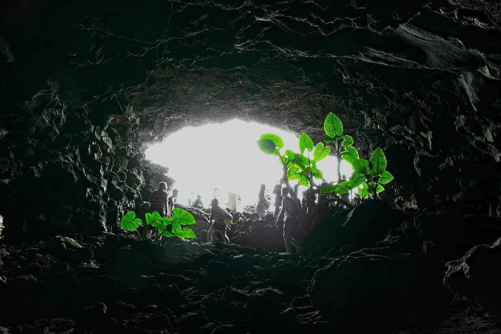

驅魔
2017-12-23

大家好，我是老闆「那個誰」，人生苦短，不如聽個「故事」解解悶？
食夢貘：
林正英是老闆我幼時最尊敬的道長，氣宇軒昂又談吐幽默，重點是從旁門術士到超級殭屍，管他死活只要心術不正、害人損鄰，都難逃他的符咒與拳腳。
直到真對鬼神有所認識後才發現，那些我們以前認為就是來搗亂魯小的鬼怪，多半都是自己心裡生出來的。
甚麼意思？空穴不來風，疑心必生鬼。
只要心裡有疑、心裡有想、心裡有虧，怎能不誕生出各種魑魅魍魎，替我們娓娓道著那些難以說出的故事與願望。
只是久了，我們開始嫌祂們壞、嫌祂們直接、嫌祂們恐怖、嫌祂們麻煩，試圖切得乾乾淨淨，祂們怎能不傷心、不難過，才想要回來提醒提醒我們，祂們本源於人心的愛恨情仇。
那些驅得走的，只是想得開，不願繼續計較；驅不走的，只是跟我們緣深一點，放不下而已。
其實祂們最怕是你離開之後，祂們也終將無處可居，隨風逝去。
還好，柑仔店都趕在最後一刻，把祂們的故事存入瓶中，不論是人的還是鬼的、是神的還是妖的，都還能讓你聽見祂們最原初的悲喜嗔癡，留下那段人鬼神妖交纏時的浪漫。
--無論你是誰，給我你的故事，我告訴你不知道的故事--